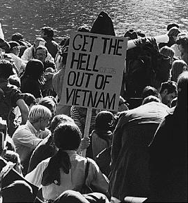

Immigration to the United States from Vietnam was often required as a result of the Vietnam War and the U.S.’s involvement in it. Many Americans disfavored the acceptance of Vietnamese immigrations into the United States as the unwanted result of the war was still fresh in their minds. In fact, in a 1975 GallUp Poll, only 36 percent of Americans favored the Vietnamese refugees rebuilding their lives in the United States. However, President Gerald Ford passed the Indochina Migration and Refugee Act of 1975, giving special status to the refugees and providing financial aid for their resettlement. Through many operations, Vietnamese refugees were resettled in the United States, in a manner that prevented the formation of ethnic enclaves and encouraged assimilation.
As the number of U.S. troops in Vietnam began to increase, the victory of the South seemed like a likely outcome. When communist soldiers, called the Viet Cong, began to fight a guerrilla war with ambushes and the creation of huge tunnel complexes to hide in, this was no longer the case. With lots of anti-war protests occurring in the United States and the death of many American soldiers, President Johnson stopped sending troops. Then with the introduction of President Nixon in 1968, the American army officially pulled out of the war. April 30, 1975, marked the end of the war with the Fall of Saigon. The result was the North Vietnamese invading the South and unifying it under communist rule.
As Vietnam came under communist rule, there began to be a refugee crisis. Vietnamese citizens were being displaced from areas that were overrun by communist armies. Along with this, there was the fear of the North Vietnamese coming for those in the South who allied themselves with the United States and didn’t support communism. Thus, the two main push factors for the Vietnamese to leave were the war/instability and political persecution. The new government formed “reeducation camps”, meant to teach South Vietnamese men the “ways of the government”. In reality, these were labor camps where the men would be held for years.

The Vietnamese refugees were brought to the United States among other countries. Often times, they had little choice where they ended up as they were refugees and had to go wherever they were welcomed. However, the pull factors for going to the United States included the evacuation operations and the Indochina Migration and Refugee Assistance Act. The United States had airlift operations, in which they would transport Americans and U.S-allied Vietnamese out of Vietnam. This was much more favorable and safer than escaping by boat, where the potential threats are increased. The United States was also preferred as the Indochina Migration and Refugee Assistance Act included aid for the refugees’ resettlement and special status for these specific immigrants.
On April 29, 1975, Operation Frequent Wind was conducted. This was one of multiple operations the United States launched to help some of the Vietnamese escape the country. It consisted of the evacuation of 7,000 American civilians and U.S.-allied Vietnamese from Saigon. Next, Operation New Life was done. The refugees were taken to temporary refugee camps in the Philippines and Guam, where they were processed for their entry into countries like the United States. In total 110,000 refugees were processed under Operation New Life. This evacuation of refugees directly after the war is considered to be the first wave of Vietnamese immigration to the United States.
For many other Vietnamese refugees, escaping meant leaving aboard boats. Collectively these people are termed “boat people”, escaping from Vietnam directly after the war or even many years later. A mass exodus of Vietnamese refugees aboard boats occurred in 1978-1979, marking the second wave of Vietnamese immigration. This sparked the creation of the Orderly Departure Program (ODP) by UNHCR. This program helped to organize the process of resettling the Vietnamese refugees in countries like the United States and Canada. Even with ODP, there were still many problems the refugees faced when traveling by boat. For starters, the boats used were of poor condition and were overcrowded with more people than should be on them. Death could result from many different aspects, such as the weather, starvation, or illness. Another major problem was the presence of pirates, who could rob, torture, rape, or murder the boat people.
Operation New Arrivals was the final step for Vietnamese refugees to become immigrants in the U.S. It consisted of the movement of Vietnamese refugees from temporary refugee camps in countries like Guam and the Philippines to the United States. States like California, Florida, and Pennsylvania transformed national ground training sites and military bases into refugee centers that would house the Vietnamese until they were able to be released. At these camps, educators and social service providers were present, providing the refugees with education and cultural training. Essentially, the immigrants were taught how to assimilate, as the United States would become their new home and they would have to adapt in order to succeed there. Upon their release, the refugees were scattered around the United States to prevent the formation of ethnic enclaves and “ghettoism”.
| Year | # of Immigrants |
|---|---|
| 1980 | 231,000 |
| 1990 | 543,000 |
| 2000 | 988,000 |
| 2006 | 1,118,000 |
| 2010 | 1,241,000 |
| 2014 | 1,292,000 |
“We are a nation of refugees. Most of us can trace our presence here to the turmoil or oppression of another time and another place. Our nation has been immeasurably enriched by this continuing process. We will not turn our backs on our traditions. We must meet the commitments we have made to other nations and to those who are suffering. In doing so, we will also be renewing our commitments to our ideals.”
- Cyrus Vance, July 1979
Title: "Vietnamese Immigrants in the United States"
Title: "From Humanitarian to Economic: The Changing Face of Vietnamese Migration"
Title: "Vietnamese Re-Education Camps: A Brief History"
Title: "From Refugees To Americans: Thirty Years Of Vietnamese Immigration To The United States"
Title: "Vietnamese Americans"